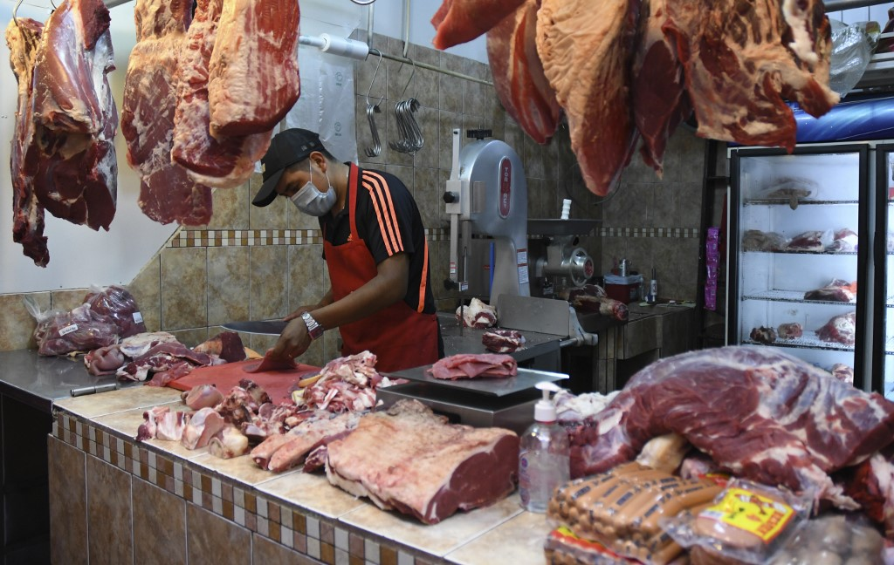

La pandemia de Covid-19 ha afectado la vida de gran parte de la población mundial, y -según se dio a conocer recientemente- está generando un nuevo impacto en su hábito alimenticio: una disminución brusca en su consumo de carne.
Es que el consumo per cápita de 2020 caerá a su nivel más bajo en nueve años, y la caída del 3% respecto al año pasado representa la mayor disminución desde al menos 2000, según datos de Naciones Unidas. Y no sólo eso: expertos de todo el mundo predicen disminuciones no sólo per cápita, sino también para la demanda general en sus respectivos países.
Este cambio representa una alteración dramática para una industria que se ha basado en un crecimiento constante. En particular, el cambio está ocurriendo en todos los mercados principales, incluso en EE.UU., donde se predice que el consumo de carne per cápita no volverá a los niveles previos a la pandemia hasta al menos cuatro años más.
¿Por qué esta alteración tan importante en cuanto al consumo de este alimento? Según analistas, hay una serie de factores que contribuyen. Las consecuencias económicas del virus implican que los consumidores están reduciendo las facturas de comestibles. Los cierres de restaurantes han afectado la demanda, ya que las personas comen más carne cuando cenan afuera de su domicilio.
Asimismo existe desconfianza en este producto en algunos países. Por ejemplo, en China, que representa aproximadamente una cuarta parte del consumo mundial, existe una creciente desconfianza sobre los productos animales después de que el Gobierno sugiriera una relación entre la proteína importada y un brote en Pekín. Las interrupciones en la producción, como los brotes en plantas que provocaron una crisis de la industria en EEUU, también crearon problemas de suministro que llevaron a una menor ingesta de carne.
De igual modo, la explosión de las infecciones por coronavirus en los mataderos y las plantas procesadoras –de EE.UU. a Brasil y Alemania– han resaltado el costo de la industria en sus empleados, que manejan trabajos peligrosos por bajos salarios y pocos beneficios. Sin embargo, aún es demasiado pronto para saber si el nuevo escrutinio público sobre las condiciones de los trabajadores afectará la demanda de carne.
Precisar también que la disminución prevista para este año también vendría después de una caída en el consumo global per cápita en 2019, cuando la peste porcina africana mató a millones de cerdos en China, lo que aumentó los precios minoristas de la carne de cerdo y redujo la demanda. Las pérdidas durante dos años consecutivos significarán una caída de cerca de 5% en el consumo per cápita desde 2018, según datos de la Organización de las Naciones Unidas para la Alimentación y la Agricultura.